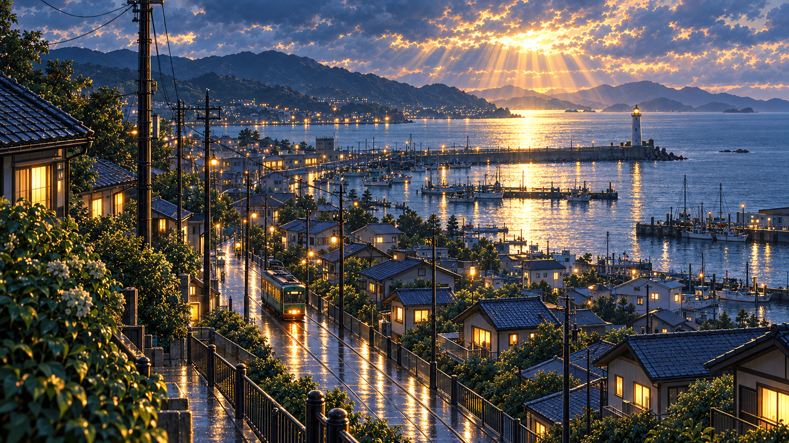
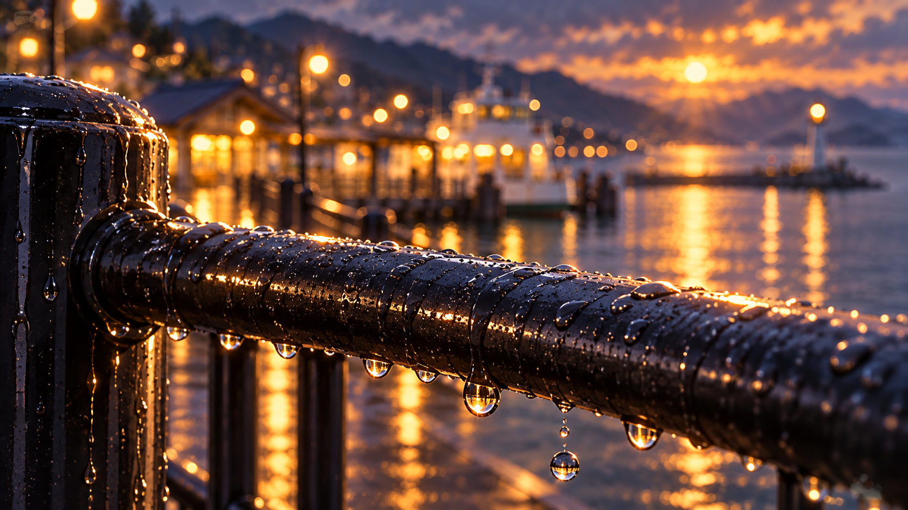
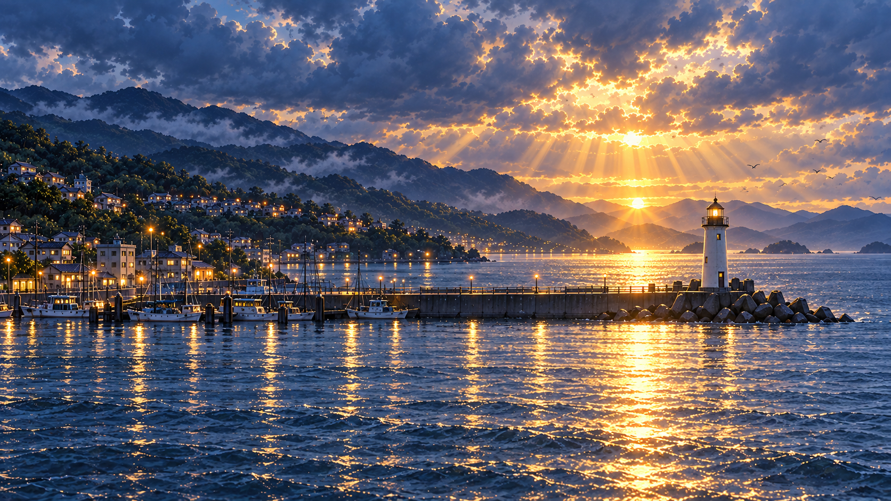
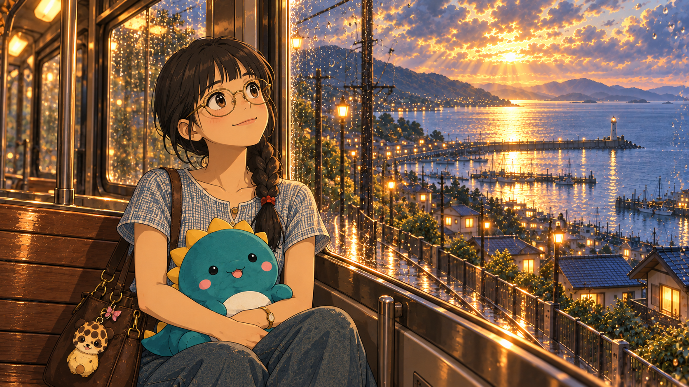
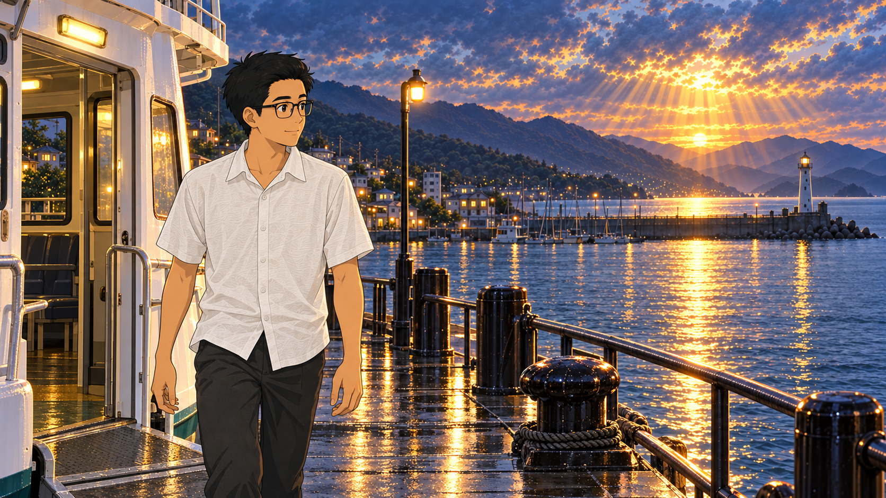
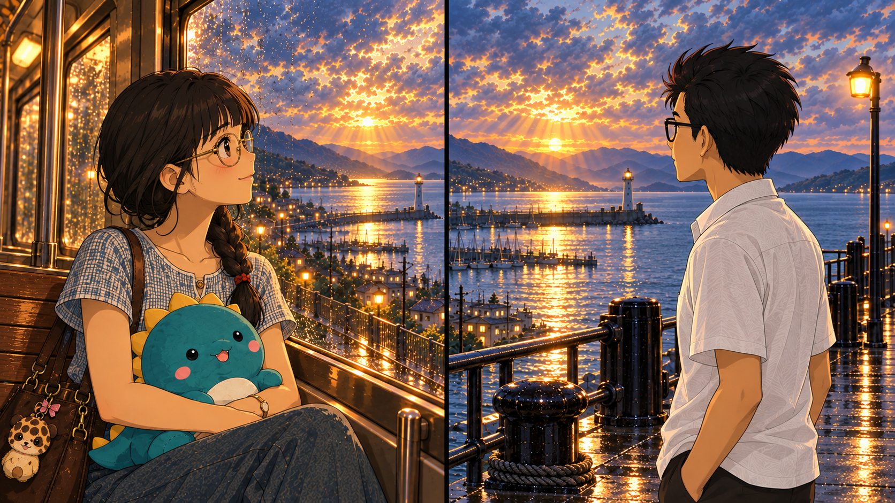

S01 — The town after rain | 15 seconds

1
00–02s
| WIDE — Coastal town

2
02–05s
| DETAIL — Rain on rail

3
05–07s
| WIDE — Lighthouse

4
07–10s
| MEDIUM — She looks up

5
10–12s
| MEDIUM — He arrives

6
12–15s
| MATCH CUT — Same direction